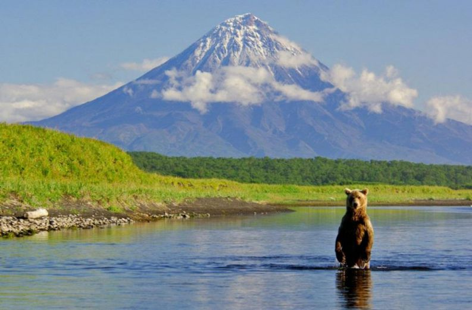

ОБЗОР
Виды Кроноцкого озера поразительно напоминают классические японские пейзажи: горы и воды, правильный конус вулкана над широкими волнами. Помимо настоящей природной уникальности, красота этих озерных видов — убедительнейшая причина приехать сюда. Талантливый фотограф или художник может создать здесь свои «Сто видов Кроноцкой горы», которые не уступят знаменитым видам Фудзи.
Роль Фудзи исполняет вулкан Кроноцкая сопка на восточной стороне озера. С южной стороны возвышается вулкан Крашенинникова, не такой идеально картинный, но тоже тесно связанный с озером. Активность этих двух вулканов и породила его десять тысяч лет назад, в эпоху позднего плейстоцена, когда потоки лавы запрудили протекавшую здесь реку. Получился водоем необычной формы (практически равнобедренный треугольник), самый большой по площади на Камчатке — 242 квадратных километра.
-

Фотоальбом
Одиннадцать островов в восточной части Кроноцкого озера носят имена участников Камчатской экспедиции Федора Рябушинского, исследовавшей эти места в 1908–1910 годах. На островах собираются большие колонии тихоокеанских чаек, по берегам озера гнездятся орланы, скопы, сапсаны, водную гладь украшают лебеди. Лебедей можно видеть даже зимой, когда озеро замерзает — они зимуют у незамерзающего истока реки Кроноцкой.
Подводные обитатели озера — особые виды гольцов и кокани (так называют «оседлый» вид лосося-нерки), образовавшиеся в закрытой экосистеме. Озеро связывает с океаном река Кроноцкая, но обычные лососи пройти по ней сюда на нерест не могут — мешают пороги в верхнем течении.
С Кроноцкого озера — точнее, с охотничьих угодий вокруг него — началась история камчатских заповедных земель. В 1882 году здесь был образован Соболиный заказник, призванный защитить от истребления местных соболей.
С точки зрения фотографа Кроноцкое озеро — одно из самых медитативных и фотогеничных мест заповедника. За пять минут можно наблюдать все Кроноцкие погодные метаморфозы. Ясное небо буквально за минуту затягивается плотными облаками. Вынос воздушных масс с океана случается каждый день, а до большой воды всего 10 километров. По долине реки облака долетают до озера за считанные минуты, меняя погоду, краски и настроение озерного пейзажа. Самое необычное впечатление — поймать такой «вынос» на воде, когда идешь на моторе на полном ходу к острову, и вдруг все вокруг исчезает в серой плотной кучевой массе. Если не сбавить скорость, можно на полном ходу вылететь на камни. А стоит только начать сворачиваться, как ветер разгоняет облака — и снова над озером ясно видна Кроноцкая сопка. Так что настраивайтесь на английскую погоду: дождь, туман, ветер, шторм, штиль, солнце. Все это уместится в два часа, пока длится экскурсия.
Над Кроноцкой сопкой часто можно наблюдать редкое природное явление — лентикулярные, или линзовидные облака. Эти облака образуются между горизонтальными слоями воздуха, в атмосфере достаточной влажности. По виду они напоминают зависшую над горой летающую тарелку: не двигаются по ветру, а закручиваются вокруг вершины, как сахарная вата.
ВАЖНО
Попасть к Кроноцкому озеру, как и вообще на территорию Кроноцкого заповедника, можно только через официальных туроператоров Камчатского края. Самостоятельные посещения запрещены.
Альтернативный путь — устроиться на месяц волонтером в заповедник. Но сразу хотим предупредить. Если вы едете в заповедник ради медведей, которыми он славится, Кроноцкое озеро — не самая подходящая точка. Даже в августе, когда в Южно-Камчатский заказник стекаются толпы медведей со всей округи, чтобы продегустировать нерку, берега Кроноцкого пустынны. За месяц проживания там мы видели медведя живьем только один раз, причем «лицом к лицу», у самого кордона. Нам повезло — медведь испугался квадроцикла и рванул прочь от лагеря. Если бы он выбрал другое направление, все могло бы закончиться не так удачно. Поэтому, несмотря на кажущуюся безопасность, даже здесь категорически нельзя выходить за пределы лагеря одному и без фальшфейера.
МЕСТНЫЕ ОСОБЕННОСТИ
Специальных туров на озеро нет. Их совмещают с посещением Долины Гейзеров и кальдеры вулкана Узон. Кроноцкое озеро операторы часто просто исключают из маршрута, считая его скучным объектом. Там действительно нет подготовленных пеших туристических маршрутов, кроме одного — водного. Инспекторы заповедника могут устроить экскурсию по озеру на моторной лодке. С воды можно сделать уникальные кадры Кроноцкой сопки и ее окрестностей. О такой экскурсии надо договариваться заранее с туроператором при покупке тура.
Рядом с озером, в нескольких километрах от кордона Исток, находится кордон Аэродром. Он стал очень популярным местом благодаря дневникам инспектора заповедника, фотографа дикой природы Игоря Шпиленка. Там живут многие герои его рассказов. Хотя бы с одним из них — Лисой Алисой — можно познакомиться, если выпадет оказия съездить с инспекторами от Истока до Аэродрома.